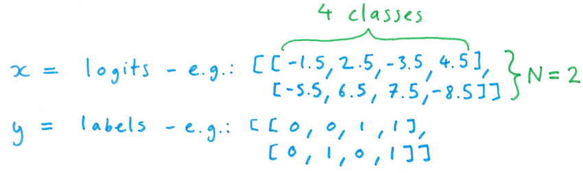
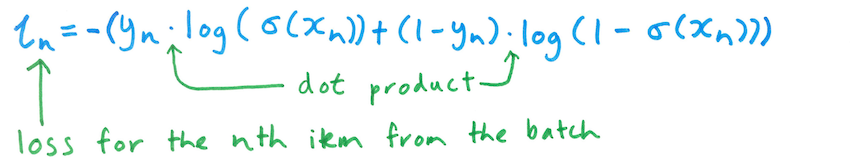
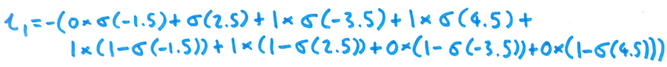
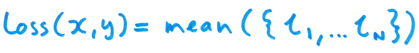
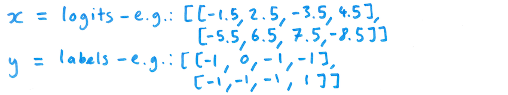
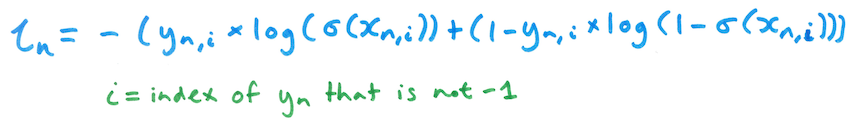
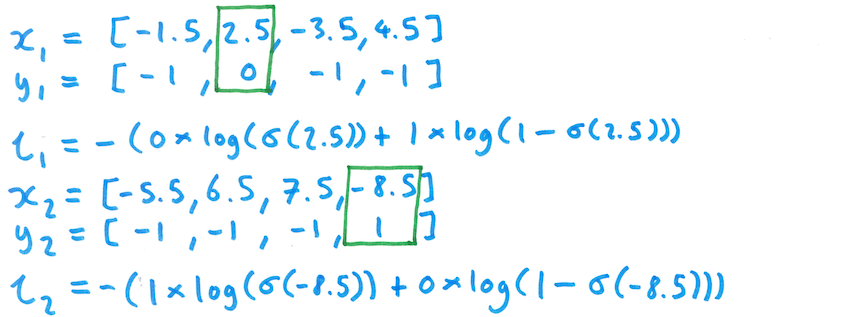

More efficient labelling via a modified loss function
tl;dr
One can dramatically reduce the cost of labelling data for a multi-label classifier, using a custom loss function adapted from binary cross entropy.
Labelling data is expensive
Supervised learning requires labelled data, and manually labelling examples - for example identifying categories for documents - can be expensive.
In the Contextual team at Schibsted, we use natural language processing and machine learning to derive value from text data, such as news articles from Schibsted media brands, including Aftonbladet, Afterposten, SvD, and VG. One of our products is a system for matching news articles to contextual advertising campaigns that make the matches using news article content, rather than user browsing history.
Brand safety is an important concern in contextual advertising: articles that are deemed brand unsafe for a given campaign should not be matched to it. We have investigated text classification as a way to ensure brand safety of contextual advertising campaigns. A challenge with this approach is that the subtantial cost of labelling when producing a training dataset for a multi-label text classifier.
This blog post presents how a custom loss function can be used to substantially reduce the burden of data labelling.
Labelling for multi-label classification
When training a multi-label classifier with supervised learning, one typically starts with a dataset of Ntotal examples, where each example includes the input item, together with a vector of C labels, where C is the number of categories. Producing such a dataset will require O(Ntotal x C) time. Therefore, labelling data is particularly expensive for multi-label classification problems.
Given a suitable training dataset, the standard approach is to use the binary cross entropy loss function when training a multi-label classifier. In pytorch, this is implemented in torch.nn.BCELoss and torch.nn.BCEWithLogitsLoss. BCEWithLogitsLoss is the same as torch.nn.BCELoss but with an initial sigmoid layer on the inputs, so that one can avoid numerical instability that can occur when working with (potentially tiny) probability values.
The BCEWithLogitsLoss function takes as input a batch of "logit" values (scores that can be converted to probabilities using the sigmoid function) - each with N rows and C columns - and corresponding labels, each label being 0 or 1 for the given example and category:

For a given item in the batch (i.e. a single row from x and y), the loss is given by the following formula:

Here, $\sigma$ is the element-wise logistic (sigmoid) function - so it is applied to each element of xn. Here's an example of this computation for the first item in the batch from above:

The overall loss for a batch of data is then simply the mean of the loss scores for the individual items in the batch:

Side-note: the negative log of a probability is known as the information content ("self information") of an event. So, ln ends up being the sum of the information content contributed by each of the categories.
Leave out labels for input examples?
The binary cross entropy loss function requires each item to be labelled for every category. However, it would be really nice to be able to leave out labels - perhaps even only labelling a single category per input example. This would make it much easier to accrue positive and negative examples.
There are at least two phases of data collection where such a technique could prove useful. When initially creating a training dataset, one could seek out candidate positive and negative examples for a given category, and then manually review them to confirm or flip the candidate label for each item. The technique could also prove useful when improving the dataset, as it would allow one to seek out particularly tricky postive and negative examples for a particular category, and to only have to label the given category for those examples.
If we don't have a technique allowing us to leave out labels, then we would be forced to provide labels for all other categories, which can increase the labelling burden by a factor of C.
A simple approach here would be to simply train C separate binary classifiers, and to combine them into one classifier after they are each trained individually. However, this approach is somewhat inelegant, and could be wasteful in terms of memory and compute. Furthermore, model weights are not shared, which means that there is no possibility for data from one task to inform the classifier for another task.
Custom loss function
One solution to this problem is to modify the binary cross entropy loss function to ignore specified categories when computing loss for a given input example. This can be implemented by specifying a label "mask" for each input example, as discussed here and here.
Here, we illustrate this approach, focusing on the case where only a single category has a label for each training example. Using this approach, the new loss function still accepts logits as the input x, but the label matrix y is modified so that only one category has a label for a given input item, and every other category has a null label of -1 for that input example.

The loss for a single item in a batch is then modified to only look at the logit score and label for the non-null category:

Here's what that computation would look like for both items from the batch above:

Ideally, we'd like to be able to cope with the more general requirement of masking zero or more categories for each input example, even though we may in practice only label one category for each example. The following code snippet implements this more general masking approach in pytorch:
import torch class BCEOnSelectedLogitLoss(_Loss): def __init__(self, reduction: str = 'mean') -> None: super(BCEOnSelectedLogitLoss, self).__init__(None, None, reduction) def forward(self, logits: Tensor, labels: Tensor) -> Tensor: # Extract a mask matrix from the labels matrix: mask_symbol = -1 mask = (labels != mask_symbol).type(labels.dtype) # Eliminate the mask value (-1) from the labels to avoid numerical problems # when inputting it to the original loss function: labels_no_mask_values = labels * mask # Get the individual loss function contributions for each category and example: loss_function = torch.nn.BCEWithLogitsLoss(reduce=False) loss_without_mask = loss_function(logits, labels_no_mask_values) # Convert contributions to zero as indicated by the mask values: loss_with_mask = loss_without_mask * mask # Each unmasked category example will contribute equally to the final loss: loss_mean = loss_with_mask.sum()/mask.sum() return loss_mean
A quick sanity check confirms that the loss function produces the same result when we run the original loss function on only the selected categories:
bce_loss = torch.nn.BCEWithLogitsLoss() logits_matrix1 = torch.tensor([[2.5], [-8.5]]) labels_matrix1 = torch.tensor([[0], [1]], dtype=torch.float64) print(bce_loss(logits_matrix1, labels_matrix1)) selected_bce_loss = BCEOnSelectedLogitLoss() logits_matrix2 = torch.tensor([[-1.5,2.5,-3.5,4.5], [-5.5,6.5,7.5,-8.5]]) labels_matrix2 = torch.tensor([[-1,0,-1,-1], [-1,-1,-1,1]], dtype=torch.float64) print(selected_bce_loss(logits_matrix2, labels_matrix2))
Output:
tensor(5.5395, dtype=torch.float64) tensor(5.5395, dtype=torch.float64)
We gave this modified loss function a spin on an inhouse brand safety classfication dataset, with our model consisting of a simple embedding layer followed by a linear layer (adapted from the pytorch text classification tutorial, and similar to the FastText architecture). We confirmed that performance is similar using C separate binary FastText classifiers, as judged by AUC for the individual classifiers.
So, this does indeed seem to be a viable approach for training a single multi-label classifier from a dataset where each item only includes a label for a single category: it works! 🥳
Note: Results are not shown - out of scope for this blogpost.
Conclusion
Using a custom loss function based on binary cross entropy, one can include selectively labelled examples, without having to label every category. This can reduce the labelling cost by a factor of C = Number of categories, when one only wishes to label a single category for each example. We applied this approach in the context of multilabel text classification, but it is equally applicable to other modalities, such as image data.
Social media:
If you would like to get in touch, here's my social media:
- LinkedIn: https://www.linkedin.com/in/tomwhitington
- Twitter: @Tom_Whitington
- Mastodon: @tomwhitington@sigmoid.social
Comments
Comments powered by Disqus